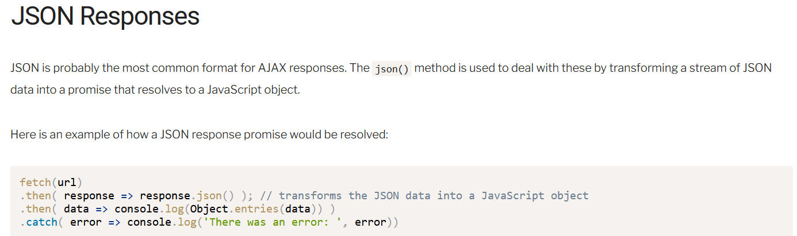

I used this fetch and then statement a lot in my previous web development projects. I never really understood what then and promises do. The reading I did made more sense on those two subjects for me but I would probably need to visit Brother Thayne's office hours to learn more deeply.